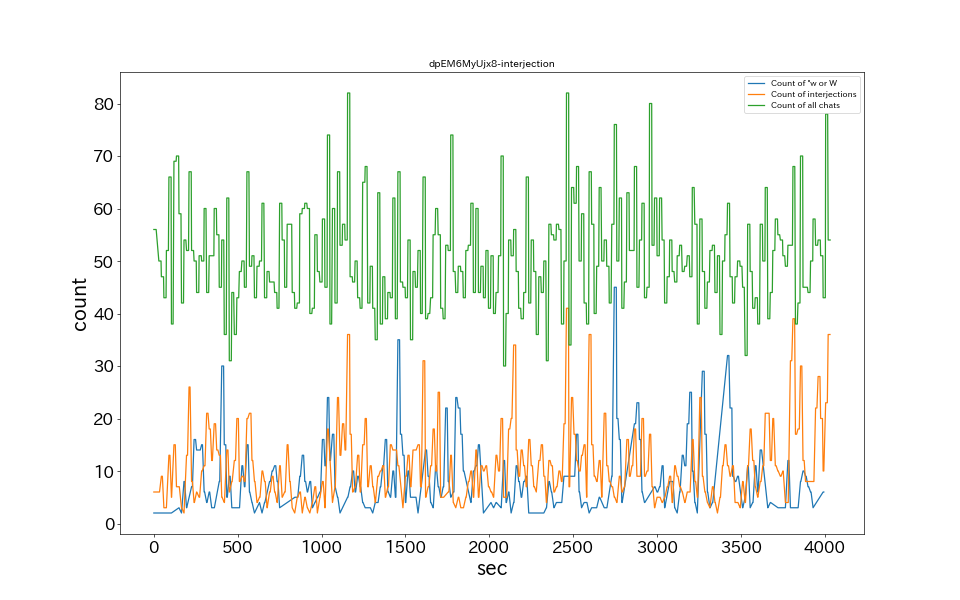

15秒あたりのコメント数
草、wのチャット数ランキング
| No. | 時間 | 草、wチャット数 |
|---|---|---|
| 1 | 00:45:15 | 45 |
| 2 | 00:23:45 | 35 |
| 3 | 00:56:30 | 32 |
| 4 | 00:06:15 | 30 |
| 5 | 00:54:00 | 29 |
| 6 | 00:52:45 | 25 |
| 7 | 00:16:45 | 24 |
| 8 | 00:29:30 | 24 |
| 9 | 00:47:30 | 23 |
| 10 | 00:28:30 | 22 |
感動詞のチャット数ランキング
| No. | 時間 | 感動詞チャット数 |
|---|---|---|
| 1 | 00:40:30 | 41 |
| 2 | 01:03:00 | 39 |
| 3 | 00:18:45 | 36 |
| 4 | 00:42:45 | 36 |
| 5 | 01:06:30 | 36 |
| 6 | 00:35:15 | 34 |
| 7 | 00:26:15 | 31 |
| 8 | 01:02:45 | 31 |
| 9 | 01:03:45 | 30 |
| 10 | 01:05:30 | 28 |
チャット内単語出現ランキングTop20
| No. | 原型 | チャット数 |
|---|---|---|
| 1 | 草 | 1044 |
| 2 | 余 | 479 |
| 3 | おお | 388 |
| 4 | 拍手 | 356 |
| 5 | ん | 346 |
| 6 | 僂指 | 323 |
| 7 | かなた | 263 |
| 8 | ちゃん | 250 |
| 9 | ポルカ | 234 |
| 10 | お嬢 | 223 |
| 11 | おかゆ | 218 |
| 12 | の | 209 |
| 13 | ない | 190 |
| 14 | これ | 189 |
| 15 | 理由 | 172 |
| 16 | そう | 169 |
| 17 | スバル | 168 |
| 18 | ルーナ | 164 |
| 19 | w | 159 |
| 20 | MIO | 157 |